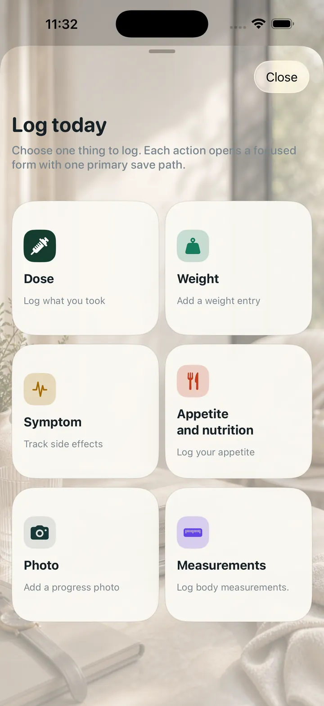

تسجيل الجرعات بسرعة ومن دون فوضى.
احتفظ بالجرعة والوزن والأعراض والشهية والصور معًا في مكان واحد.
تتبّع هذا الروتين مع سجل الجرعات والوزن والأعراض والشهية والصور والتذكيرات والتصديرات في تطبيق خاص واحد.

شاشات التطبيق المعروضة باللغة الإنجليزية.
اختر شكل الدواء الذي تستخدمه. يمكنك تغييره لاحقًا.
| الطريق | شكل الدواء | الجدول الزمني |
|---|---|---|
| الحقن | قلم متعدد الجرعات | يوميا |
تتبّع هذا الروتين مع سجل الجرعات والوزن والأعراض والشهية والصور والتذكيرات والتصديرات في تطبيق خاص واحد.
احتفظ بالجرعة والوزن والأعراض والشهية والصور معًا في مكان واحد.
اتجاه التعرض المقدر هو تقدير نسبي للتتبع الشخصي. إنه ليس تركيز الدم المقاس. ويستند على نموذج مبسط. لا تستخدم هذا لاتخاذ قرارات الجرعات.
أنشئ ملخص PDF واضحًا للمواعيد من العلاج والوزن والأعراض والقياسات التي سجلتها.
يتم عرض جميع الأدوية وأشكال التقديم المضمَّنة هنا.